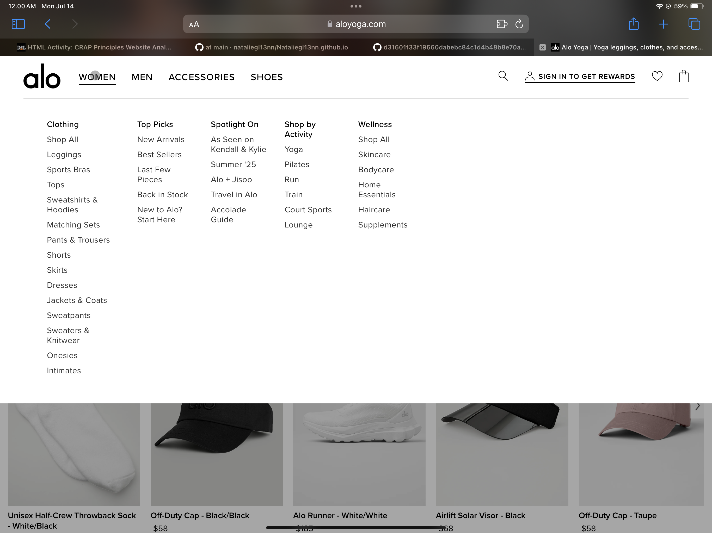
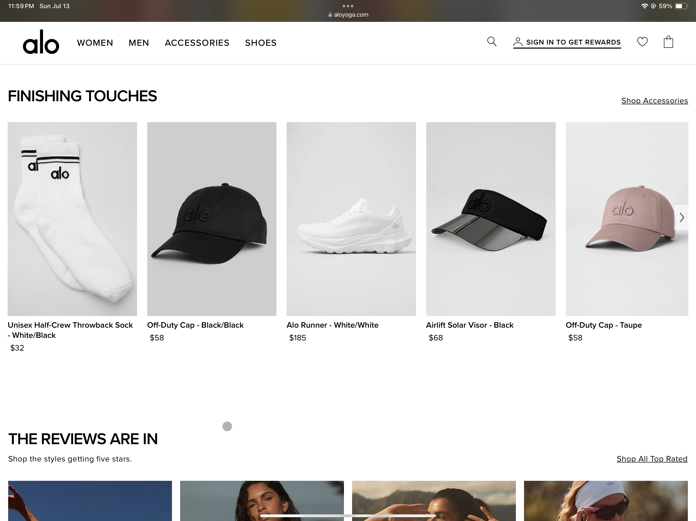

Alo Yoga Website Review
For this project, I looked at the Alo Yoga website and evaluated it using the CRAP design principles: contrast, repetition, alignment, and proximity. I’ve been on the site before, but viewing it with a design mindset made me realize how much work goes into making it look and feel effortless. The contrast stood out. Alo uses a lot of neutral tones in their backgrounds, so when they want to grab your attention, they do it with bold text, dark buttons, or high-quality product photos that really pop. It’s subtle, but super effective. I noticed my eyes going directly to the call-to-action buttons or new arrivals section without even thinking about it. Repetition was also easy to spot. Every product tile has the same layout: image, product name, and price. Fonts and colors stay the same across the whole site, and the way the navigation is laid out feels predictable in a good way. It makes browsing feel smooth because you kind of know what to expect no matter where you click. Alignment is doing a lot behind the scenes. Everything feels structured. The product grids line up perfectly, and small things like menu items and footer links all feel balanced and thought out. It gives the site a clean, calming vibe. Proximity and spacing is intentional. Items that belong together are grouped closely, while unrelated sections have enough breathing room to feel separate. It keeps the page from feeling cluttered.
Screenshots



Website: https://www.aloyoga.com
Date of Analysis: July 20th, 2025